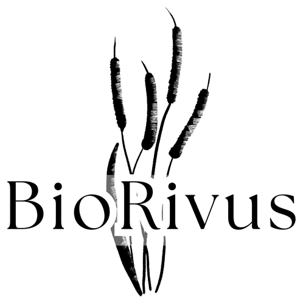
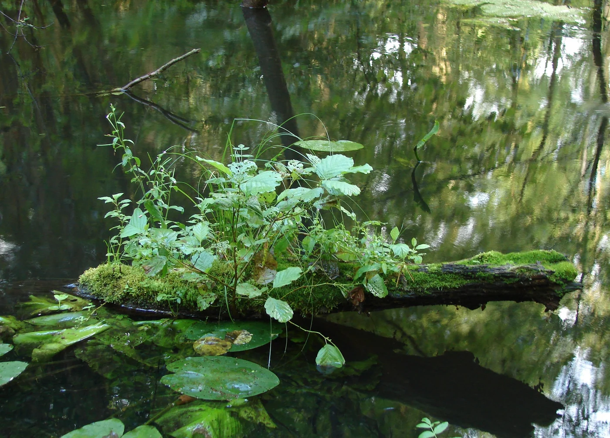
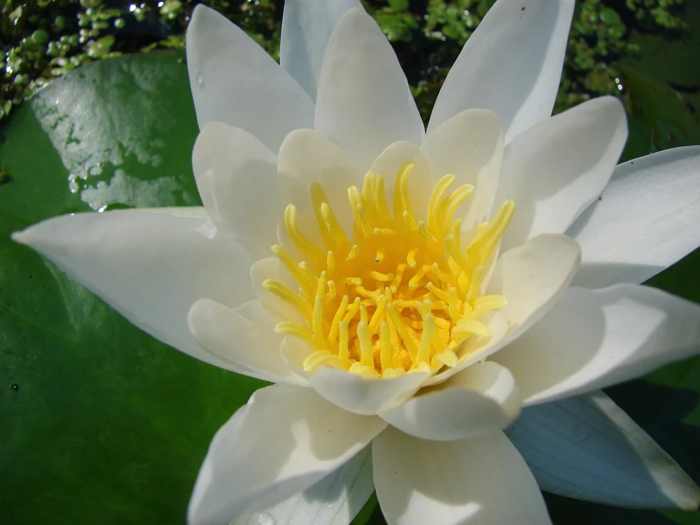
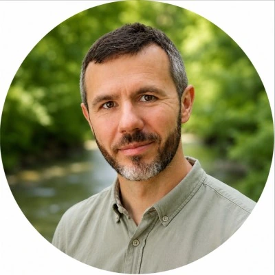
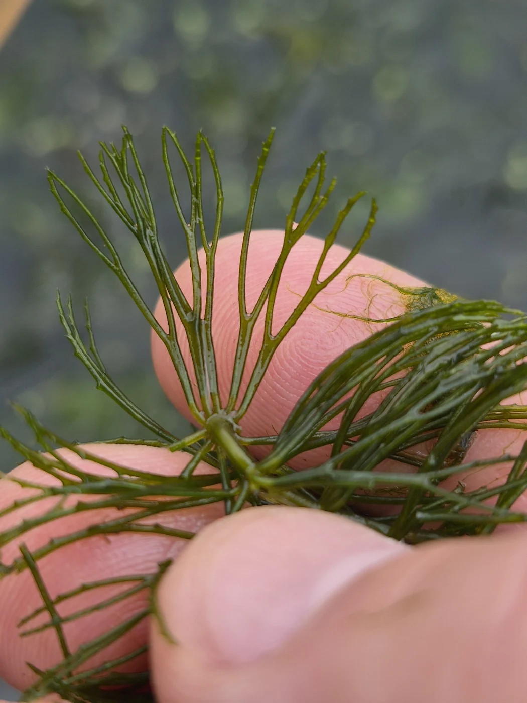

Woda pod lupą
Życie rzeki, organizmy wskaźnikowe, właściwości wody i sposoby poznawania ekosystemów wodnych.
OBSERWACJE / DOŚWIADCZENIA
TOMASZDORADZTWO ŚRODOWISKOWE I EDUKACJA
Łączę badania terenowe, wiedzę naukową i edukację, by pomagać podejmować lepsze decyzje dla środowiska. Wspieram firmy, samorządy, społeczności lokalne i organizacje pozarządowe.


01 / W CZYM MOGĘ POMÓC
Wykonuję inwentaryzacje przyrodnicze niezbędne do postępowań środowiskowych, badam ekosystemy wodne i obliczam ślad węglowy organizacji. Przygotowuję dokumentację, narzędzia i szkolenia dopasowane do celu projektu.
Bioindykacja · hydromorfologia · monitoring
Badam rzeki i ich otoczenie: roślinność wodną, siedliska oraz przekształcenia koryta i doliny. Łączę ocenę biologiczną z analizą warunków hydromorfologicznych i presji na ekosystem.
Gatunki i siedliska · decyzje środowiskowe · pozwolenia
Wykonuję inwentaryzacje przyrodnicze na potrzeby postępowań o wydanie decyzji środowiskowych, ocen oddziaływania na środowisko oraz innych pozwoleń i uzgodnień dotyczących inwestycji.
Ślad węglowy · własny kalkulator · środowiskowe ESG
Obliczam ślad węglowy organizacji i opracowuję spersonalizowane kalkulatory emisji. Pomagam uporządkować dane środowiskowe do raportowania ESG, odpowiedzi dla kontrahentów i planowania redukcji wpływu na środowisko.
Punkty odniesienia: GHG Protocol ↗ · ESRS i dobrowolny standard VS ↗
Porozmawiajmy o emisjach i danych ↗Bazy danych · mapy · analiza przestrzenna
Przekształcam wyniki badań terenowych i dane przestrzenne w mapy oraz zestawienia przydatne w dokumentacji środowiskowej i zarządzaniu terenem.
Warsztaty · szkolenia · projekty przyrodnicze
Przygotowuję i prowadzę zajęcia o wodzie, bioróżnorodności i wpływie człowieka na środowisko. Dobieram program, metody i materiały do wieku uczestników, miejsca oraz celu spotkania.
TWÓJ KONTEKST MA ZNACZENIE
Obliczanie śladu węglowego firmy, własne kalkulatory emisji i wsparcie w środowiskowym komponencie ESG. Dla planowanych inwestycji — inwentaryzacje do postępowań środowiskowych. Dla zespołów — szkolenia z danych, emisji i bioróżnorodności.
Omówmy potrzeby firmy ↗Inwentaryzacje przyrodnicze do dokumentacji inwestycji, badania i monitoring cieków oraz mapy siedlisk i presji. Przygotowuję zalecenia dla ochrony przyrody i gospodarowania wodą, a także programy edukacyjne dla mieszkańców.
Porozmawiajmy o Twojej gminie ↗Spacery przyrodnicze, BioBlitz i wspólne dokumentowanie gatunków. Pomagam mieszkańcom poznawać lokalne rzeki i tereny zieleni, rozumieć zagrożenia oraz przekładać obserwacje na propozycje działań ochronnych.
Zaplanujmy lokalne działanie ↗Wsparcie merytoryczne projektów ochrony przyrody i edukacji: rozpoznanie terenowe, metodyka obserwacji, analiza danych i rekomendacje. Współtworzę programy nauki obywatelskiej, materiały edukacyjne i działania angażujące wolontariuszy.
Porozmawiajmy o projekcie ↗02 / CZŁOWIEK ZA BIORIVUS

Ekolog, badacz ekosystemów wodnych
i popularyzator nauki.
W BioRivus łączę to, co od lat realizuję w nauce, w terenie i w pracy z ludźmi.
Zajmuję się ekologią i ochroną środowiska, ze szczególnym uwzględnieniem rzek, roślinności wodnej i bioróżnorodności. Interesuje mnie nie tylko to, co pokazują wyniki badań, ale też to, jak przełożyć je na zrozumiałe wnioski i sensowne działania.
Od ponad 20 lat współpracuję z instytucjami naukowymi i badawczo-rozwojowymi (m.in.: Uniwersytet Przyrodniczy w Poznaniu, Uniwersytet Łódzki, Poznański Park Naukowo-Technologiczny). Doświadczenie akademickie stanowi fundament mojego podejścia do badań terenowych, analizy danych i oceny ekosystemów wodnych.
Współtworzyłem bioindykacyjne i hydromorfologiczne metody oceny rzek. Uczestniczyłem w opracowaniu i wdrożeniu Makrofitowej Metody Oceny Rzek stosowanej w Państwowym Monitoringu Środowiska.
Wieloletnią współpracę z krajowymi centrami nauki i instytucjami edukacyjnymi łączę z prowadzeniem warsztatów, szkoleń i działań popularyzujących naukę.
Współpracuję z szeregiem organizacji pozarządowych, w tym z WWF Polska, Klubem Przyrodników oraz Fundacją Edukacyjną „Ferajna”.
PUBLIKACJE I DOROBEK NAUKOWY
Jestem współautorem publikacji naukowych poświęconych bioindykacji, hydromorfologii i ocenie stanu ekologicznego rzek. W moich pracach ważne miejsce zajmują roślinność wodna, zróżnicowanie siedlisk oraz wykorzystanie tych elementów w diagnozie ekosystemów rzecznych.
Dorobek publikacyjny łączę z praktycznym doświadczeniem w rozwijaniu metod badawczych i interpretacji danych środowiskowych.
03 / EDUKACJA I POPULARYZACJA NAUKI
Najlepiej poznajemy świat, kiedy możemy zapytać, sprawdzić i samodzielnie odkryć. Tworzę zajęcia, spotkania i materiały, które łączą rzetelną naukę z doświadczeniem.
Wieloletnie doświadczenie we współpracy z krajowymi centrami nauki i instytucjami edukacyjnymi przekładam na programy dla dzieci, młodzieży i dorosłych. Łączę edukację przyrodniczą z eksperymentowaniem, dopasowując język i metody do odbiorców.
Przeczytaj rozmowę o mojej pracy edukacyjnej ↗FORMY WSPÓŁPRACY
Dla szkół, instytucji kultury, organizacji społecznych, mieszkańców i zespołów firmowych.
Przykładowe tematy — program dopasowuję do wieku, celu spotkania i miejsca.
Życie rzeki, organizmy wskaźnikowe, właściwości wody i sposoby poznawania ekosystemów wodnych.
OBSERWACJE / DOŚWIADCZENIAZmiana klimatu, ślad węglowy, mikroplastik i zależności między codziennymi decyzjami a środowiskiem.
WARSZTATY / WYKŁADYBioróżnorodność w mieście, uważna obserwacja i wspólne dokumentowanie przyrody z iNaturalist.
SPACERY / NAUKA OBYWATELSKAMasz własny temat, grupę lub wydarzenie?
Zbudujmy program wokół Twojego celu.
04 / DOŚWIADCZENIE W PRAKTYCE
Wybrane przedsięwzięcia z mojego dorobku badawczego, edukacyjnego i społecznego.

PRZYRODA Z BLISKA / FOT. TOMASZ ZGOŁAWspólne obserwacje mieszkańców, spacery BioBlitz i dokumentowanie gatunków w iNaturalist. Projekt łączy poznawanie miejskiej przyrody z budowaniem zaangażowania w jej ochronę.
OCHRONA PRZYRODY / ZAANGAŻOWANIE
Projekt nad Górczynką łączący rozpoznanie stanu ekologicznego, głos mieszkańców, działania porządkowe i rekomendacje dla przyszłości doliny.
BIZNES / DANE ŚRODOWISKOWE
W ramach projektu CREDIT4CE koordynowałem prace nad opracowaniem kalkulatora śladu węglowego dla przedsiębiorstw. Odpowiadałem za część merytoryczną: metodykę obliczeń, dobór i opracowanie wskaźników oraz zakres i logikę funkcjonalności narzędzia. Łączyłem wiedzę środowiskową z praktycznymi potrzebami użytkowników.
05 / JAK PRACUJĘ
Ustalamy problem, lokalizację, odbiorców i oczekiwany rezultat. Na tej podstawie przygotowuję zakres i wycenę.
Dobieram metody, zbieram informacje i analizuję kontekst. Tam, gdzie to potrzebne, pracę zaczynam od wizji terenowej.
Otrzymujesz czytelne opracowanie, mapy, zalecenia lub program działania — zgodnie z ustalonym zakresem.
Wyjaśniam wyniki, wskazuję ograniczenia i pomagam ustalić, jak wykorzystać wiedzę w praktyce.
06 / UWAŻNOŚĆ NA CO DZIEŃ
Przyroda nie kończy się na obszarach chronionych. Bywa w zasięgu krótkiego spaceru, wśród miejskiej zieleni, tuż obok nas.
Fotografuję, obserwuję i dokumentuję. Te drobne odkrycia są początkiem większych pytań.
Mój przyrodniczy notatnik ↗AUTORSKIE FOTOGRAFIE / TOMASZ ZGOŁA
07 / ZACZNIJMY OD ROZMOWY
Opisz miejsce, wyzwanie lub pomysł. Wspólnie ustalimy, jakiej wiedzy i jakich działań potrzebujesz.
biorivus@gmail.com ↗Poznań · zakres i miejsce realizacji ustalamy indywidualnie.